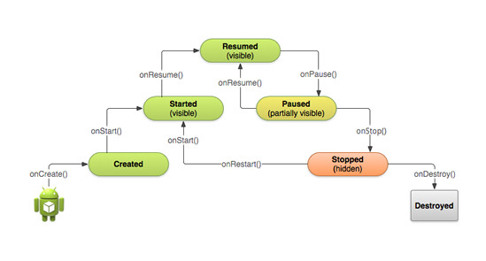

Dispositivos Móveis
Aulas do curso de Dispositivos Móveis
Analise e Desenvolvimento de Sistemas - Unipac Uberlandia.
Prof. Rogério Fontes / @rogeriofontes
| rogerio.tomaz@unipacuberlandia.com.br |
professorrogeriofontes@gmail.com
Android

O que é o Android
Android é o nome do sistema operacional baseado em Linux que opera em celulares (smartphones), netbooks e tablets. É desenvolvido pela Open Handset Alliance, uma aliança entre várias empresas, dentre elas a Google.
Estrutura do Android
O Android é baseado em fluxo em Atividades (Activitys)
O que é activity
Activity é uma classe que representa uma/ou mais tarefas, muito focada, no que um usuário pode fazer em uma aplicação Android. A maioria das atividades fazem interação com usuário.
O que é activity
Activity é um componente de aplicativo que fornece uma tela na qual os usuários podem interagir para fazer qualquer coisa, como fazer ligação, tirar uma foto, enviar um e-mail ou visualizar um mapa.
O que a activity faz?
A classe de atividade controla todo processo de interação com S.O e o usuário, como criar telas e dimensões, conectar banco de dados, e demais ações de integração com usuário.
Mais sobre activity
- Cada vez que uma nova activity inicia, a anterior é parada, mas o sistema preserva a acitivity na stack.
- Quando uma nova activity inicia, ele é empurada para a back stack e coloca ela em foco para o usuário.
- Cada atividade recebe uma janela para desenhar sua interface que é visível para usuário.
- Um aplicativo geralmente consiste em várias atividades que são fracamente ligadas entre si.
Processo antre as Activitys
| Método | Observação | Pode ser morto? | Próximo |
|---|---|---|---|
| onCreate() | Chamado quando a atividade é criado. Aqui é quando você deve fazer todas as funções como: criar as views, linkar os dados às listas, etc. |
Não | onStart() |
| Método | Observação | Pode ser morto? | Próximo |
|---|---|---|---|
| onRestart() | Chamado após a atividade ser parada e antes de ser reinciada. Sempre seguida por onStart() |
Não | onStart() |
| Método | Observação | Pode ser morto? | Próximo |
|---|---|---|---|
| onStart() | Chamado quando a atividade se torna visível ao usuário. Seguido pelo onResume() se a atividade roda na frente ou por onStop() se ela se torna invisível. |
Não | onResume()ou onStop() |
| Método | Observação | Pode ser morto? | Próximo |
|---|---|---|---|
| onResume() | Chamado quando a atividade vai iniciar a interação com o usuário. Nesse ponto, sua atividade está no topo da pilha de atividades e quaisquer dados que sejam inseridos serão feitos aqui. Sempre seguido pelo onPause(). |
Não | onPause() |
| Método | Observação | Pode ser morto? | Próximo |
|---|---|---|---|
| onPause() | Chamado quando o sistema está por resumir a atividade anterior. Isso é tipicamente usado para persistir quaisquer mudanças ainda não efetivadas, parar animações e oturas coisas que possam consumir a CPU, etc. | Sim | onResume()ou onStop() |
| Método | Observação | Pode ser morto? | Próximo |
|---|---|---|---|
| onPause() | Implementações desse método devem ser rápidos pois a próxima atividade não será mostrada até que esse método seja finalizado. Seguido por onResume() se a atividade retornar para a frente ou onStop() se ela se tornar invisível ao usuário. | Sim | onResume()ou onStop() |
| Método | Observação | Pode ser morto? | Próximo |
|---|---|---|---|
| onStop() | Chamado quando a atividade não mais estiver visível ao usuário, pois outra atividade foi resumida e está na frente desta. | Sim | onRestart()ou onDestroy() |
| Método | Observação | Pode ser morto? | Próximo |
|---|---|---|---|
| onStop() | Isso pode acontecer porque outra atividade está sendo iniciada, uma atividade existende está sendo trazida para a frente ou essa atividade estiver sendo finalizada. | Sim | onRestart()ou onDestroy() |
| Método | Observação | Pode ser morto? | Próximo |
|---|---|---|---|
| onStop() | Seguida pelo onRestart() se essa atividade está voltando para interagir com o usuário ou onDestroy() se a atividade estiver sendo encerrada. | Sim | onRestart()ou onDestroy() |
| Método | Observação | Pode ser morto? | Próximo |
|---|---|---|---|
| onDestroy() | A chamada final que você receberá antes que a atividade seja destruída ou finalizada. | Sim | Nada |
| Método | Observação | Pode ser morto? | Próximo |
|---|---|---|---|
| onDestroy() | Isso pode acontecer porque a atividade está, de fato, sendo encerrada (alguém chamou finish() nela) ou porque o sistema está temporariamente destruindo a instância da atividade para aumentar o espaço na memória. Você pode distinguir entre esses cenários com o método isFinishing() |
Sim | Nada |
Ciclo de Vida

Ciclo de Vida
Atividades no sistema são gerenciadas como um activity stack ou pilha de atividades em português. Quando uma atividade é iniciada, ela é colocada no topo da pilha e se torna a atividade corrente - a atividade anterior sempre permanece abaixo na pilha e não vai ser mostrada enquanto a atividade corrente não terminar.
Uma atividade tem quatro estados essenciais:
1º Estado:
Se uma atividade está sendo executada e está sendo mostrada na tela (que é o topo da pilha), ela está em modo active ou running.
2º Estado:
Se uma atividade perdeu o foco mas ainda assim está visível (ou seja, uma nova atividade está sendo mostrada na tela mas não ocupando-a completamente - atividades em janelas flutuantes, por exemplo, ela está em modo paused. Uma atividade em modo paused está completamente viva (ela mantém todos os estados e informações e mantém-se relacionada ao gerenciador de janelas), mas pode ser encerrado pelo sistema em situações de memória baixa extremas.
3º Estado:
Se uma atividade é completamente obscurecida por outra atividade, ela está em modo stopped. Ela ainda retém o seu estado e informações, contudo não é mais visível pelo usuário e sua janela está escondida e pode acontecer de ser encerrada pelo sistema quando for necessário liberar memória.
4º Estado:
Se uma atividade está em modo paused ou stopped, o sistema pode retirar a atividade da memória simplesmente pedindo a ela que seja finalizada ou simplesmente matando o seu processo. Quando é mostrada novamente ao usuário, ela terá de ser novamente reiniciada e restaurada para seu estado anterior.
Ciclo de Vida
Ciclo de Vida - Código
public class Activity extends ApplicationContext {
protected void onCreate(Bundle savedInstanceState){}
protected void onStart(){}
protected void onRestart(){}
protected void onResume(){}
protected void onPause(){}
protected void onStop(){}
protected void onDestroy(){}
}
Existem três laços que você pode achar interessante monitorar dentro de sua atividade:
1º laço:
O ciclo de vida completo de uma atividade acontece entre a primeira chamada do onCreate(Bundle) até o onDestroy(). Uma atividade vai fazer toda a configuração do estado "global" no onCreate() e liberar os recursos remanescentes em onDestroy(). Por exemplo, se você tem uma thread rodando em background para fazer o download de dados da rede, você deve criar essa thread em onCreate() e então pará-la em onDestroy().
2º laço:
O vida visível de uma atividade acontece entre o onStart até o onStop. Durante esse tempo o usuário pode ver a atividade na tela, apesar de às vezes não estar completamente visível ao usuário. Entre esses dois métodos você pode manter os recursos que são necessários para mostrar a atividade ao usuário. Por exemplo, você pode registrar um BroadcastReceiver no onStart() para monitorar as mudanças que impactam a interface. Os métodos onStart() e onStop() podem ser chamados múltiplas vezes enquanto a atividade se torna visível e escondida do usuário.
3º laço:
O ciclo de vida de uma atividade é definida pelos métodos de atividade mostrados abaixo. Todos eles podem ser sobrescritos para fazer o trabalho apropriado quando um estado de atividade mude. Todas as atividades vão implementar onCreate(Bundle) para que as mudanças de dados sejam persistidas e, de outra maneira, preparar para encerrar a interação com o usuário. Voc}e pode sempre chamar a superclasse quando implementando um desses métodos.
O que podemos fazer com o Android?